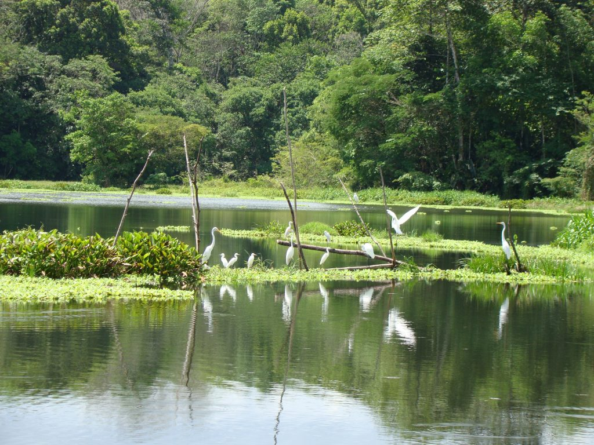
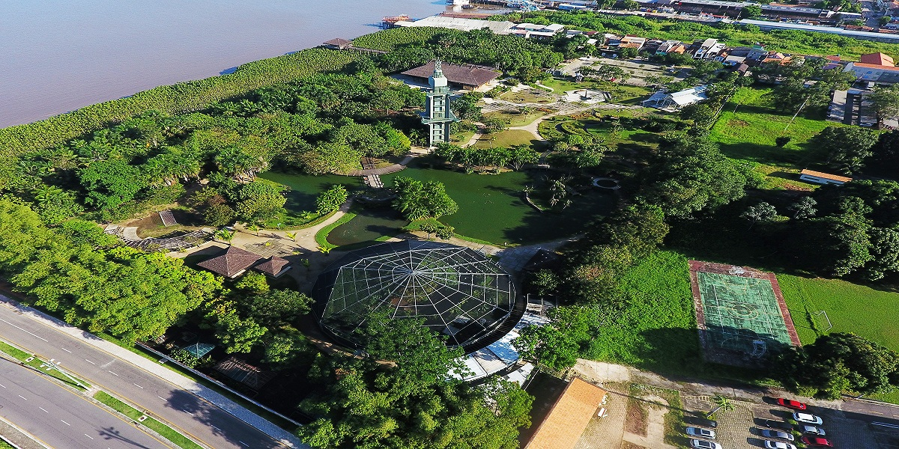
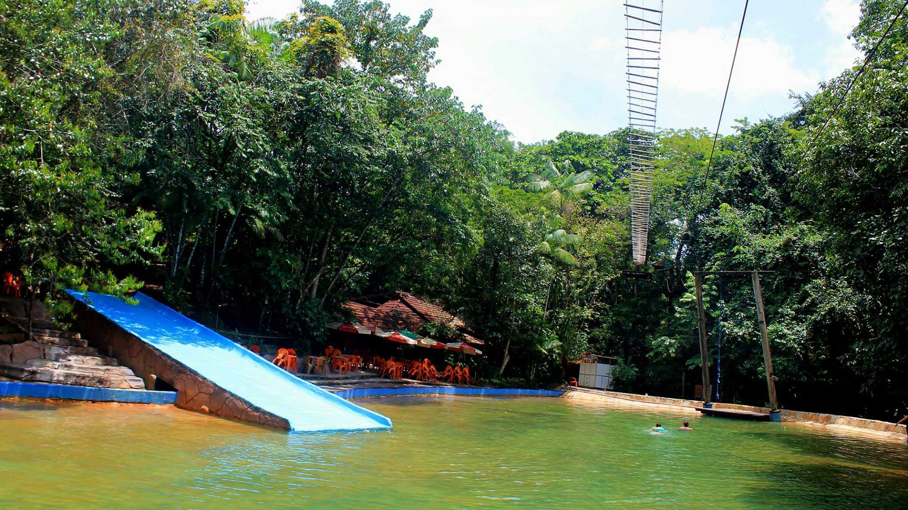

METAS
Abaixo encontra-se algumas metas que a ONU tem para seu terceiro objetivo de desenvolvimento sustentável.
Conheça todas as metas que o 3º Objetivo de Desenvolvimento Sustentável possui:Saiba Mais
Meta 1
Até 2030, reduzir a taxa de mortalidade materna global para menos de 70 mortes por 100.000 nascidos vivos.
Meta 3
Até 2030, acabar com as epidemias de AIDS, tuberculose, malária e doenças tropicais negligenciadas, e combater a hepatite, doenças transmitidas pela água, e outras doenças transmissíveis.
Meta 5
Reforçar a prevenção e o tratamento do abuso de substâncias, incluindo o abuso de drogas entorpecentes e uso nocivo do álcool.
Meta 6
Até 2020, reduzir pela metade as mortes e os ferimentos globais por acidentes em estradas.
DICAS
Dicas que podem ajudar sua saúde e Bem-Estar

Beber Água
A água é fundamental para o bom funcionamento do organismo, para o transporte de nutrientes, para a regulação da temperatura corporal, entre outras funções.

Boa Alimentação
Alimente-se bem, reduzindo sempre alimentos industrializados, ricos em sal, açúcares e gorduras. Insira na dieta mais alimentos naturais.

Praticar Exercício Físico
pratique exercícios físicos regularmente, como: caminhada, natação e entre outros.
Pontos de Bem-Estar
Alguns pontos da cidade de Belém do Pará que você pode visitar para praticas de exercícios de saúde e bem-estar
Parque Estadual do Utinga
A área é utilizada para caminhar, correr, andar de bicicleta, patins e skate, além de exercícios contemplativos de beleza cênica e meditativos. Mas o Utinga também tem opções para quem gosta dos esportes mais radicais: aqui é possível praticar a escalada em árvore, o rappel, o boia cross e ainda aproveitar uma – ou todas – das nove trilhas ecológicas
Saiba MaisParque Ecológico Mangal das Garças
O Parque Ecológico é uma síntese do ambiente amazônico no coração da Capital Paraense. O Mangal das Garças possui: lagos, farol de Belém, fonte de caruanas, borboletário, Mirante do Rio e entre outros
Saiba MaisParque dos Igarapés
O Parque dos Igarapés é único que oferece atividades de aventura como arvorismo, rapel, escalada, tirolesa, paintball e sobrevivência na selva.
Saiba Mais